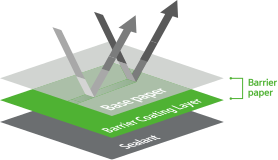
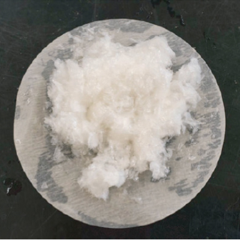

IMPAPER:: 紙素材
- バリア機能の優れたが優秀な紙の素材を使うため基に、リサイクルしやすいが容易なエコ製品です。
- 従来のアルミニウムが使われたパッケージと比べて、プラスチックとアルミニウムの使用量を45%削減し、炭素排出量を48% 削減できます。
- 紙の紙含量が高いのでリパルプ性が容易であり、アルミ蒸着多層品包装材同等の遮断性が検証されたコーヒー包装材のIMPAPER50。
- 酸素透過度が1cc, 水分透過度1.5gでコーヒーの味とフレーバーが長持ちします
製品情報見本
- ▶ 紙基盤のバリア素材
- 
- バリアコーティングにより、外部からの酸素と湿気を遮断
- ▶ 炭素排出量を48%まで削減
- 2.884 kg·CO₂/kg PET/VM-PET/LDPE
- 1,392 kg·CO₂/kg Barrier paper
- ▶ 優れた酸素・水分の遮断力が優秀
- • 酸素透過度0.5cm³/m²·day·atm、
- • 水分透過度1g/m²·day以下
- ▶ 優れた解離性が優秀
-

| Section |
Semerville rejects - %(w/w)
0.15mm(0.006") slit width |
| Test. 01 |
11.6 |
| Test. 02 |
11.8 |
| Test. 03 |
12.4 |
Average±
std. dev |
11.9 ± 0.4 |
- Barrier paper は、一般的なリパルプ工程を経て通じて、88%以上のリサイクル率を獲得確認(UL 2485認証基準85%以上)